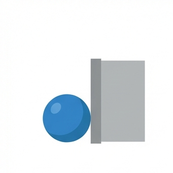
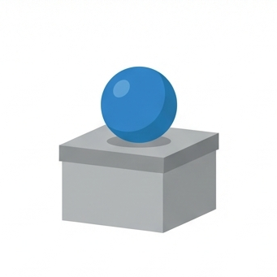
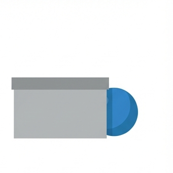
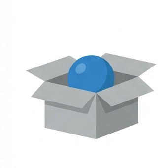
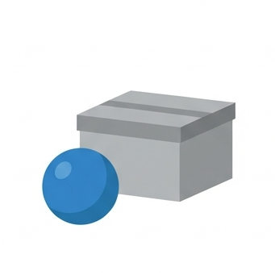
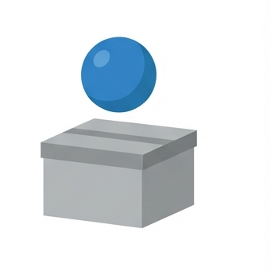
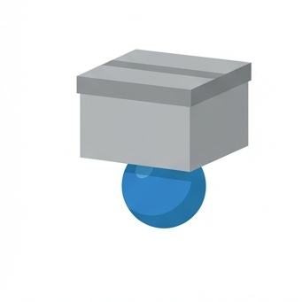
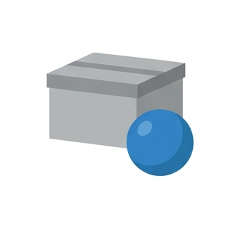
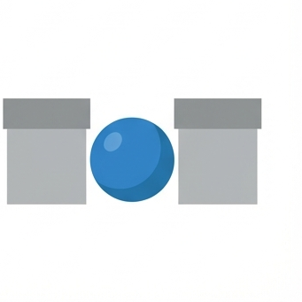

AKKUSATIV
- FÜR WEN? (DESTINATARIO)
-
FÜRPara / Por
- WOHIN? / WODURCH? (TRÁNSITO)
-
UMAlrededor / A las (Hora)
-
DURCHA través de
-
GEGENContra / Hacia
- OHNE WEN? (CARENCIA)
-
OHNESin
- BIS WANN? (LÍMITE)
-
BISHasta
-
INSAl (in das - Edificio/Lugar)
Tip: Usa el acrónimo "FUDOG" para recordarlas.
WECHSEL
Se usan con Acusativo (movimiento) O Dativo (posición)
AN

en (vertical)/junto a
AUF

sobre (encima)
HINTER

detrás de
IN

En / A (País / Ciudad / Edificio)
NEBEN

al lado de
ÜBER

sobre/encima de
UNTER

debajo de
VOR

delante de
ZWISCHEN

entre
¿Cuándo usar cuál?
(Solo
Wechsel)
AKKUSATIV
WOHIN?
(¿A dónde?)
Movimiento
Movimiento
La acción implica cruzar una frontera o
llegar a un destino.
DATIV
WO?
(¿Dónde?)
Posición
Posición
No hay cambio de lugar. Es estático.
¡Cuidado! Las preposiciones fijas (columna roja) SIEMPRE van con Dativo, incluso si hay movimiento (ej.
zu o nach).
DATIV
- WOHER? (ORIGEN)
-
AUSDe (País / Ciudad / Edificio)
-
VONDe (Persona / Profesional)
- WOHIN? (DESTINO)
-
NACHHacia (País sin art. / Ciudad)
-
ZU / ZUM / ZURHacia (Persona / Profesional / lugares) / Ocasiones
- WO? / MIT WEM? (POSICIÓN / COMPAÑÍA)
-
BEIEn (Persona / Profesional)
-
IMEn el (in dem - Edificio/Lugar)
-
MITCon
- WANN? (TIEMPO)
-
SEITDesde (hace)
-
ABA partir de
-
AMEl (Días/Partes del día)
Tip: Memoriza esta melodía: "Aus, bei, mit, nach, seit, von, zu... immer mit
dem Dativ du!"